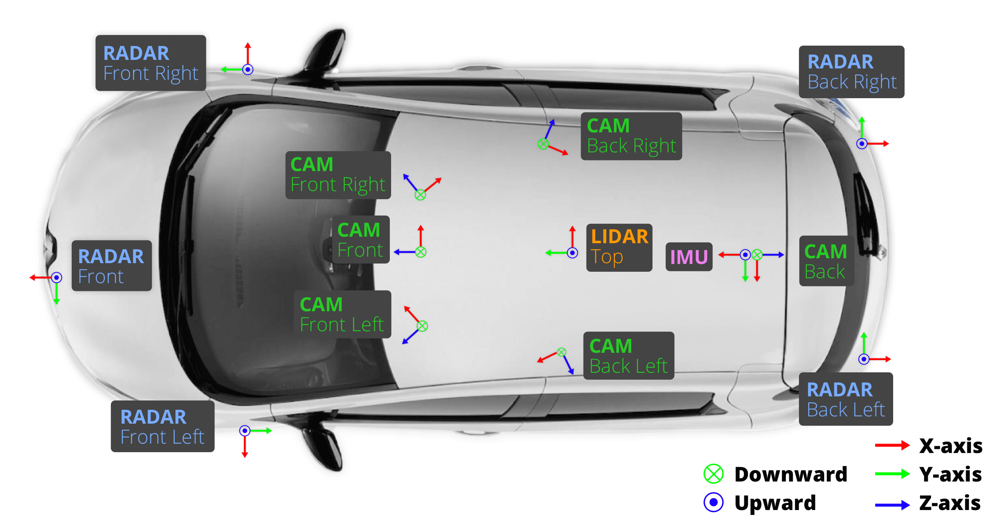

自動運転車（AV）と先進運転支援システム（ADAS）は、ディープラーニングによって革命的な進化を遂げた。データ駆動型アプローチとして、ディープラーニングは大量の走行データ（通常は詳細なラベル付き）に依存する。そのため、データセットはハードウェアやアルゴリズムとともに、AVの開発における基盤的な構成要素となっている。本論文では、最も広く使用されている自動運転データセットのひとつであるnuScenesデータセットを再考する。nuScenesはAV開発における重要なトレンドを体現しており、レーダーデータを含む最初のデータセットとして、2大陸にわたる多様な都市走行シーンを収録し、公道で稼働する完全自律走行車を使用して収集された。また、マルチモーダルセンサーフュージョン、標準化されたベンチマーク、知覚・位置推定・マッピング・予測・プランニングを含む広範なタスクを促進している。本論文では、nuScenesの作成過程、ならびにその拡張版であるnuImagesおよびPanoptic nuScenesについて詳述し、これまでの学術論文では開示されていなかった多くの技術的詳細を紹介する。
はじめに、KITTIがあった。KITTIデータセットは、3Dオブジェクトアノテーションを備えた自動運転向け初の大規模マルチモーダルデータセットである。Velodyne HDL-64Eライダーセンサーの発売（2007年）、Googleの自動運転車プロジェクト開始（2009年）という自動運転の主要なマイルストーンに続き、KITTIデータセット（2012年）はマルチセンサーADデータを広いコミュニティに初めて提供し、ステレオビジョン、オプティカルフロー、深度推定、オドメトリ、物体検出・追跡、そして各種セグメンテーションタスクの研究を促進した。しかし、規模、センサー構成、環境の多様性においてKITTIの制約は、商用ロボタクシーアプリケーションには不十分である。
2016年、MITの研究者らによって設立された会社nuTonomy（後にMotionalと改名）は、シンガポールのOne Northで世界初の自動運転タクシーサービスのパイロットプログラムを提供した。その後、同じ車両を使用して「nuTonomy 1000 scenes dataset」（nuScenes™）が収集され、2018年に初期リリース、2019年に完全リリースされた。このデータセットはnuTonomyの自動運転タクシーが運行中に遭遇する環境と課題を反映しており、自動運転モデルの評価・比較のベンチマークとして機能している。
nuScenesは、KITTIの制約を解消し、産業界と学術界がAV研究を行うための実用的なサンドボックスとして設計された。特に、学術利用は無料で、商業パートナーにはライセンスを提供している。360°カメラカバレッジ、ライダーおよびレーダーセンサーを含む完全なマルチモーダルセンサースイートを提供した最初のデータセットである。ロボタクシーのユースケース（SAEレベル4〜5）のため、走行地域は事前にマッピングされており、GNSS受信が困難な都市部でも精度の高い位置推定が可能である。セマンティックマップは環境解釈を簡素化し、予測・プランニングタスクに不可欠であることが証明されている。さらに、nuScenesは異なる気候・車両タイプ・走行方向を持つ2カ国のデータを含み、高密度な都市環境でキャプチャされた多様な環境を特徴としている。
本論文の主要な貢献は以下の通りである：
nuScenesは、左側通行と右側通行の2都市から厳選された1000のドライビングシーンを含む、大規模マルチモーダル自動運転データセットである。データ収集車両は熟練ドライバーによって非自律的に運転される。データセットは23の多様なオブジェクトクラスからの3Dバウンディングボックスアノテーション、および可視性・活動状態・姿勢などのオブジェクトレベル属性を含む。
ボストンとシンガポールでのデータ収集には、同一のセンサーレイアウトを持つ2台のRenault Zoeスーパーミニ電気自動車が使用された。具体的なセンサー構成は以下の通りである：
前方・側方カメラはFOV 70°で55°オフセットされており、後方カメラはFOV 110°である。前方・側方カメラの焦点距離は5.5mm、後方カメラは4mmで、全カメラに同一センサー（1/1.8インチCMOSセンサー、解像度1600×1200）を使用している。カメラはグローバルシャッター方式である。
画像解像度： カメラ画像は上部300ピクセルを削除することで1600×1200から1600×900にクロッピングされる。これは垂直視野の上部が自動運転の文脈では一般的に関係ないためであり、計算リソースの節約にも貢献する。
エゴモーション補償： ライダースイープは、スイープ自体のタイムスタンプにおけるエゴ位置に対してエゴモーション補償される。この補償は高周波オドメトリ情報を活用して車載で実行され、データセットファイルに組み込まれているため取り消しはできない。エゴモーション補償とグローバルシャッターの使用により、単一の変換行列を使用してライダーとカメラフレーム間でアノテーションを変換できる。
同期： カメラとライダーは共同でトリガーされタイムスタンプされるため良好に同期されているが、レーダーは同期をサポートしていない。カメラは12Hz、ライダーは20Hzで動作する。両センサーのアライメントを確保するために、各カメラとライダーから2Hzで1フレームをサンプリングする。許容できるアライメントが達成できない場合はシーン全体を破棄する。
キャリブレーション： nuScenesで使用される車両の全センサーは綿密にキャリブレーションされている。キャリブレーションは時間とともに劣化する可能性があるため、収集されたログごとにキャリブレーション品質を確認する。系統的なミスアライメントが発生した場合は、社内ツールを使用して視覚的にキャリブレーションパラメータを調整する。
選択されたシーンは2Hzでサンプリングされ、これらのサンプリングされたフレームはキーフレームと呼ばれる。各キーフレームのオブジェクトは、セマンティックカテゴリ（23のオブジェクトクラスのいずれか）、属性（可視性、活動状態、姿勢）、インスタンス識別子、およびバウンディングボックス（x、y、z、幅、長さ、高さ、ヨー角で表現）でアノテーションされる。バウンディングボックス補間がアノテーション作業の高速化に使用される。ライダーまたはレーダーのポイントを含まないボックスは、遮蔽または遠距離のオブジェクトに対応する可能性が高いため廃棄される。
ただし、ライダー/レーダー中心の設計にはバイアスが存在する：カメラには見えないがライダーまたはレーダーの存在によってアノテーションされたオブジェクトは、本質的にそのようなオブジェクトを検出できないカメラのみの知覚手法に対して不公平なペナルティをもたらす可能性がある。
nuScenesデータセットに撮影された個人のプライバシーを確保するため、顔とナンバープレートに対応する画像領域をブラー処理する。Google Street Viewのアプローチに着想を得て、非常に高い検出再現率を持つ自動物体検出・ブラー処理システムを開発した。これにより個人識別可能な歩行者の見逃しよりも多くの領域をブラー処理することを優先している。ライダーポイントをカメラ画像に投影することで、物体検出器を適用する領域を制限でき、検出再現率を大幅に向上させている。最後に、顔またはナンバープレートに対応する画像領域にGaussianブラーフィルタを適用する。
アノテーションの品質保証はデータセット作成の重要な部分であるが、AVデータセットでは議論されることが少ない。nuScenesデータセットのアノテーションはScale AIに外注され、複数回の品質保証プロセスが実施された。さらにチームによる多数の手動・半自動チェックも実施されている。最も時間のかかる手動QAステップは、アノテーションに使用したマルチモーダル3Dデータビューワーで実行された。すべてのオブジェクトトラックについてスケールとクラスを確認し、すべてのトラックのすべてのキュービッドについて位置・向き・属性を確認する。手動QAの後、複数の半自動補正ステップを適用し、向きの規則の強制、サイズ・相対位置の外れ値の可視化、属性の整合性チェックを実施する。
高精細度（HD）マップは、センチメートルレベルの精度で世界の幾何学的な3Dモデルを提供し、信号機・道路標示・道路境界などの静的道路要素のセマンティクスを含む。nuScenesデータセットは、2Dビットマップとして表現される幾何マップと、関連する属性を持つアノテーションされた2D幾何形状からなるセマンティックマップの2種類のマップを提供する。
幾何マップは独自のgraph-SLAMエンジンを使用して構築され、最大10cmの精度でグローバルに正確なマップを生成する。マッピングは、データ収集と同じセンサースイートを装備した自律走行車によって実行される。各マップノードはライダースキャンに対応し、ファクターはスキャンペア間の相対姿勢を表現する。マッチングファクターとループクローズャーファクターの2種類のファクターを追加し、ICP（Iterative Closest Point）を使用してポイントクラウド位置合わせを実行する。
セマンティックマップは、ベースマップの上に豊富なセマンティック情報（車線要素や信号機など）を提供する。厳格なQAプロセスを持つ独自アノテーションツールを使用して人間の専門家がアノテーションする。各マップ要素は点、ポリライン、またはポリゴンとして幾何学的に表現される。
nuScenesは2都市4地点のマップを提供する：Boston Seaport、ならびにSingapore OneNorth、Queenstown、Holland Village。
nuScenesデータセットには2つの拡張版がある：Panoptic nuScenesとnuImagesである。
Panoptic nuScenesは、nuScenesの1000シーン全体にわたる11億ポイントにポイントレベルのアノテーションを追加することでnuScenesを拡張する。ポイントレベルのアノテーションにはセマンティックラベルとインスタンスラベルが含まれる。nuScenesの23のthingクラスに加えて、植生や走行可能面などの7つのstuffクラスを追加し、オブジェクト（thing）とその環境（stuff）の相互作用を研究できるようにする。各アノテーションライダーポイントは手動でセマンティックラベルが付与され、nuScenesの3Dボックスを使用してthingクラスのポイントのセマンティックラベルを初期化することでアノテーション作業を削減している。
nuImagesは、nuScenesの公開後に多くのユーザーが3D検出よりも従来の2D検出・セグメンテーションへの関心を示したことを受けて公開された。nuImagesは93,000枚の画像からなるスタンドアローンデータセットで、インスタンスマスク、2Dバウンディングボックス、セマンティックセグメンテーションマスクでアノテーションされている。アクティブラーニング技術を使用して約75%の画像を選択し、レアなクラス（自転車など）、悪条件（雨・雪・夜間）、バランスの取れた時空間分布に特に焦点を当てた困難な画像を重視している。残りの25%は代表的なデータセットを保証し強いバイアスを回避するために均一にサンプリングされる。各アノテーション済み画像について2Hzで過去6フレームと将来6フレームも含まれ、nuImagesは合計120万枚のカメラ画像を含む。
nuScenesでは各タスクに対して単一のリーダーボードを作成し、すべての提出物を直接比較可能にした。KITTIのように単一クラス・難易度のみに焦点が当たり、レアなクラスが無視されるという問題を解消している。また、Waymoのように過去・未来フレームの任意の組み合わせを許可して結果を比較不能にするという問題も避けている。センサーモダリティ（ライダーのみ、カメラのみ、カメラ+ライダーが上位3組み合わせ）、マップデータの使用、外部データの使用（全提出物の20%）を選択するためのフィルターも提供している。主要メトリクスであるnuScenes Detection Score（NDS）は、よく確立されたmAPと5つのTrue Positiveメトリクスの線形結合であり、複数のレベルで分解可能である。
このセクションでは、nuScenesの元の公開後にリリースされたデータセットについて議論する。
ほとんどのマルチモーダルデータセットは、ライダーとカメラセンサーの組み合わせで車両を装備する。これらのデータセットは時間経過にわたる3Dバウンディングボックスをアノテーションし、3D物体検出と追跡タスクをサポートする。大規模なマルチモーダルデータセットに密なセグメンテーションラベルを付けたものは依然として希少である。nuScenesは最初から3D検出、追跡、予測、ライダー・パノプティックセグメンテーションを含む複数タスクをカバーする包括的なマルチモーダルデータセットとして設計された。Lyft Level 5はモーションプランニングに焦点を当て、ONCEは自己教師あり学習のための大規模な未ラベルデータを提供し、WOD（Waymo Open Dataset）はシーン数とタスク数においてnuScenesに匹敵するが、レーダーデータを欠いている。
nuScenesデータセットは、マルチモーダルセンサースイートの一部として自動車レーダーを含む最初のデータセットであった。360°カバレッジを提供するように配置された5つのレーダーを搭載し、各センサーは水平面でスキャンする。レーダーセンサーは、特にADASにおいて、ライダーよりも低コストで天候に強い代替手段を提供する。
ただし、nuScenesのレーダーデータにはいくつかの課題がある：レーダーセンサーが他のセンサーと同期トリガーされていないため大きなタイムオフセットが生じ、位置精度と解像度がライダーよりはるかに低く、マルチパス伝播が誤った戻りをもたらす可能性がある。
nuScenes発売以降、多くの他のデータセットもレーダーを含むようになった：
道路要素とそのトポロジーの検出は、環境の完全な幾何学的・セマンティック的理解のために重要である。nuScenesはLyft、Argoverse v2、WODとともに、人間の専門家によって手動でアノテーションされたセマンティックマップを提供する数少ない大規模データセットのひとつである。nuScenesには走行可能エリア、車線と仕切り、車線接続性、歩行者横断歩道などの基本的なベクトル化マップレイヤーが含まれる。さらに信号機・歩道・停止線・駐車場エリアなどの関連レイヤーも含む。
OpenLane v2はnuScenesとArgoverseの両方の上に構築され、道路要素とそのトポロジー関係の新しいアノテーションを追加している。特に、道路標識、道路標示、リアルタイムステータス付きの信号機などの手動アノテーション・検証済みの交通要素と、交通規則を表現するためのセンターラインとの関連付けを提供する。
セマンティック占有タスクは、通常、走行シーンを3Dグリッドに分割し、現在または将来のタイムスタンプにおける各ボクセルのセマンティックラベルを予測することを含む。Occ3D-nuScenesとOpenOccは、nuScenesとPanoptic nuScenesの上に3D占有ベンチマークを構築する。両パイプラインは以下の共通コンポーネントから構成される：
最近、自動運転を含む視覚タスクへの言語統合への関心が高まっている：
3D物体検出は、事前に定義されたクラスセットのオブジェクトを空間内で位置特定し分類するタスクである。nuScenes検出タスクの主要メトリクスであるnuScenes Detection Score（NDS）は、mean AP（mAP）に加えて5つのmean True Positiveメトリクスを含む：
NDSはボックス位置、サイズ、向き、属性、速度の観点から検出品質を考慮した検出パフォーマンスを測定できる。NDSはダウンストリームのプランニングパフォーマンスとmAPよりも高い相関を持つことが分かっている。2020年のアップデート以降、nuScenes検出タスクはPlanning KL-Divergence（PKL）も測定しており、検出器の検出結果と人間ラベル付き検出の代わりにプランナーがどのように計画するかの差異を測定する。
3D物体追跡は、事前に定義されたクラスセットの各オブジェクトの位置、クラス、IDを継続的に推定するタスクである。nuScenes追跡タスクの主要メトリクスはAMOTA（Average Multi Object Tracking Accuracy）であり、異なるリコール値にわたってMOTAスコアを平均化することで様々なシナリオでトラッカーを評価できる。さらに、以下の2つの新しいメトリクスも使用される：
ライダーセグメンテーションは、ポイントクラウドセット内のすべてのライダーポイントのカテゴリを予測するタスクである。nuScenesは2つのライダーセグメンテーションタスクを提供する：
このタスクはセグメンテーションと追跡の両方を含む。パノプティック追跡はパノプティックセグメンテーションに加えて、時間的一貫性とピクセルレベルの関連付けを強制する。2つのトラックが設けられている：
PAT（Panoptic Tracking metric）が導入され、パノプティックセグメンテーションとインスタンス関連付けの両方のパフォーマンスを時間的に同時評価する。PATはエラータイプの差別化、追跡断片化へのペナルティ、長期追跡一貫性、ID転送へのペナルティ、誤ったIDを持つ正しくセグメント化されたインスタンスの削除へのペナルティを特徴とする。
nuScenes検出チャレンジが始まった2019年以降、NDSは大幅に向上しており、特にTransformerの活用が増加している。最近では性能向上が鈍化している傾向にある。
主要なトレンドとしてカメラ-レーダーフュージョンへの注目が挙げられる。2020年には、ライダーのみのCenterPointとカメラ-レーダーフュージョンのCenterFusionの間には22.4%のNDSギャップが存在した。HVDetFusionの登場によりそのギャップは8.1%まで縮小された（3年間で約3分の1に減少）。ライダーセンサーは大幅にコストが高いため、カメラ-レーダーフュージョンは依然として有望な研究方向である。
オフライン検出においては、時間的な双方向情報や複数フレームのスパースサンプリングを活用する手法が開発されている：
3D多物体追跡のパフォーマンスは検出性能に大きく依存しており、物体検出の改善は通常追跡タスクに波及する。主要なトレンドとして以下が挙げられる：
Transformerの活用： MotionTrackはデータ関連付けプロセスをTransformerのself-attentionとcross-attentionメカニズムのクエリ・キー・バリュー行列間のドット積プロセスとして定式化する。TransMOTはデータ関連付けプロセスを超えて、追跡とオブジェクトクエリによる共同追跡・検出を行うためにTransformerモデルを追跡プロセス全体に適用する。
マップ情報の利用： nuScenesコミュニティ内で唯一、マップ情報を組み込んだ追跡手法であるOffline Re-IDは、レーンが対象車両の動きを誘導するため、長時間の遮蔽下での追跡を改善するためにレーンを強力な事前情報として使用する。
ライダーセグメンテーションは、ポイントベースアプローチから投影ベース手法へ、そしてボクセルベースアプローチへと進化した：
PointTransformer v3（PTv3）はトップパフォーマンスのポイントベース手法であり、局所化されたパッチアテンション機構を採用してポイントを重複しないパッチにグループ化することで計算効率を高め、グローバルアテンションの計算コストなしに複雑な空間関係を捉えられる。
ほとんどの手法はプロポーザルフリーであり、エンコーダとバックボーンから豊富な特徴を学習し、セグメンテーションヘッドとインスタンスヘッドの両方に送るパターンに従う。代表的な手法であるPanoptic-PHNetはボクセルとBEVエンコーダを特徴抽出に使用し、KNNトランスフォーマーをインスタンスセンターの学習に使用し、インスタンスを得るためにクラスタリングを行う。最近では以下のマルチモーダル手法も探索されている：
nuScenesは詳細なHDマップへのアクセスを提供することでモーション予測のデータセットとして際立っていた。初期モデルはエージェントの軌跡とマップ情報をBEV画像としてラスタライズし、CNNでエンコードしていた。しかし、HDマップのラスタライズは計算的に非効率で、遮蔽により情報が失われる可能性がある。
代替手法として、HDマップをベクトル化してマップ情報をより効率的に使用するアプローチが開発された：車線境界は複数の制御点でスプラインを構築し、横断歩道は複数点で定義されるポリゴンとして、一時停止標識は単一点で表現される。これらのポリラインはベクトルセットとして表現され、グラフニューラルネットワークでエンコードされる。ベクトル表現はラスタライズベースのアプローチと比較して少ないパラメータで良好なパフォーマンスを達成できる。
nuImagesでの2D検出・セグメンテーション： nuImagesはインスタンス・セグメンテーションマスクを持つ2Dアノテーション画像データを提供し、2D物体検出、単眼3D物体検出、画像ベースのセマンティック・インスタンスセグメンテーションのAV研究を促進している。nuScenesとnuImagesは同様のセンサー設定・条件で収集されたため、同じ運用ドメインを持ち、nuImagesをnuScenesの画像ベース手法の事前学習に使用できる。
マップ要素検出： HDマップは自律走行に不可欠であるが、構築には手間のかかる人間によるアノテーションが必要でスケールが難しい。そのため、マップをその場で構築するオンラインマッピングに焦点を当てた取り組みが行われており、nuScenesはコミュニティのデフォルトベンチマークデータセットとなっている。研究はBEVセマンティックセグメンテーションから直接ベクトル化マップオブジェクトの作成まで多岐にわたる。前者はより単純なタスクだが、従来のダウンストリームモジュールはラスタライズされた画像からベクトル化ポリラインインスタンスを構築するための多くのヒューリスティクスを必要とする。後者はより困難なタスクだが、エンドツーエンドで学習でき、ダウンストリームにより直接必要とされる。
32の異なる3D物体検出手法のval・testスプリット間のパフォーマンスギャップを分析した結果、nuScenes、Waymo、KITTIの3データセット比較において以下の結果が得られた：
これらの結果は、nuScenesのvalとtestスプリットがより類似していることを示しており、ドメインシフトがnuScenesではより少ない問題であることを示唆している。
カメラとライダーのタイムスタンプ分析により、少なくとも99.7%の信頼度でタイムオフセットが[-4.5, 5.0]msの範囲内にあることが分かった。これはWODの[-6, 7]msよりわずかに優れており、定義した15msの品質要件を大幅に上回っている。参考として、カメラとライダーの間の1msのタイムオフセットは、速度10m/sのエゴ車両が1cm移動することに相当する。静的なシーンでは、ライダーポイントがカメラフレームに対して約1cmシフトして見える可能性があり、これは自動車ライダーセンサーの位置精度マージン内である。
nuScenesは83の長い走行シーケンス（14.8時間）から慎重にキュレーションされた1000のシーン（5.5時間）で構成されている。シーンへの分割にはいくつかの利点がある：手動キュレーションにより交差点での密な交通などの興味深いシナリオに焦点を当てられる。ただし、情報量の少ないシーンが既に廃棄されているため、アクティブラーニング研究の有効性が制限される。また、大量のシーンにより、同じデータ分布に従うバランスの取れたtrain・val・testスプリットの作成がはるかに容易になる。
nuScenesのtrain・val・testスプリットは同じ地域から収集されている。これはジオフェンスされた領域でのロボタクシーユースケースに焦点を当てた設計選択であった。知覚・プランニングタスクには許容されるが、マッピングタスクには望ましくない過学習を引き起こす可能性がある。マッピング目的でnuScenesを使用する場合は、オリジナルのスプリットではなく特別に設計された非重複スプリット（例：BEVセマンティックマッピング用の代替スプリットやマッピング目的専用のスプリット）の使用を推奨する。
nuScenesはロボタクシーの初期運用に代表されるシンガポールとボストンの都市・郊外走行環境を含む。商業的ロボタクシーサービスの高速道路への最近の展開は、より高速なシナリオへの注目を移している。高速道路環境の主要課題は悪天候と長距離知覚であり、これらに対応するため：
nuScenesデータセットは自動運転の分野に大きな影響を与えた。nuScenesはKITTIのマルチモーダルな性質を基盤としつつ、世界初の自動運転タクシーサービスに使用された完全なセンサースイートまでハードウェアセットアップを拡張した。本論文では、nuScenesデータセットの作成方法を詳細にまとめ、未公開の詳細を共有した。その多くの側面を批判的にレビューし、さらなる改善への提案を行った。最後に、nuScenesデータセット上の様々な公式・非公式ベンチマークタスクと、これらのベンチマーク上のリーディングメソッドの時間的な発展を概説した。
Motionalによる次世代データセットであるnuPlanは、知覚と予測を超えて機械学習ベースのプランニングのためのクローズドループシミュレーションフレームワークと大規模なデータセットを特徴とする。将来のデータセット世代は、現在自動運転事故の大部分の原因となっている知覚とプランニング両面のレアなコーナーケースシナリオにさらに焦点を当てるべきである。